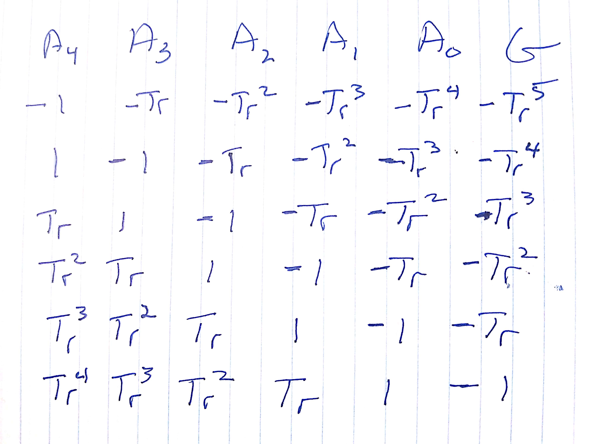

Radiative equilibrium#
This script calculates pure radiative equilbrium for an nlayer atmosphere over a black surface, where each layer has identical transmissivity and the total atmospheric
import numpy as np
from numpy.linalg import solve
np.set_printoptions(precision=2, threshold=50)
Five layer atmosphere#
Let \(A_n\) be the flux from layer n and \(G\) be the flux from the black surface. If upward fluxes are negative and downward fluxes are positive, the the flux at each of the six levels in this problem are shown in the sketch below, where \(Tr = \exp(-\tau)\) is the longwave transmissivity of each layer.

That produces a matrix \(M\) which looks like this:
{kind=link}
Creating the matrix equation#
The idea is to solve the equilibrium problem as six equations in six unknowns, where the unknowns are
and the at each level, we need to have an upward flux of \(\vec{S_0} = \left [ -S_0, -S_0, -S_0, -S_0, -S_0 , -S_0 \right ]\) to balance the downwelling shortwave flux at that level.
five layer example#
The off-diagonal elements will be created with the numpy.diag function which requires a vector v of the proper length, and the number of the diagonal, \(k\).
help(np.diag)
Here are the k values for the matrix
nlayers=5
kvals = np.arange(nlayers,-(nlayers+1),-1,dtype=int)
kvals
Set the total transmissivity to 0.2, and split it evenly among five layers
tot_trans=0.2
log_layer_trans = np.log(tot_trans)/nlayers
trans = np.exp(log_layer_trans)
print(f"{(trans**nlayers)=:5.3f}")
create all the off-diagonal elements of the matrix \(M\).
import pprint
pp = pprint.PrettyPrinter(indent=4)
def find_diaglen(kvals,nlayers):
nlevels=kvals[0] + 1
keep_len=[]
for the_k in kvals:
if the_k >=0:
diaglen = nlevels - the_k
else:
diaglen = nlevels+the_k
keep_len.append(diaglen)
return keep_len
def find_element(kvals,diaglen,trans):
nlevels=kvals[0] + 1
element_dict={}
for the_k,the_len in zip(kvals,diaglen):
if the_k >= 0:
direction = -1
the_exp=the_k
else:
direction = 1
the_exp=-(the_k+1)
the_element=(trans**the_exp)*direction
element_dict[the_k] = {'element':the_element,
'exponent':the_exp,'diaglen':the_len}
return element_dict
diaglen = find_diaglen(kvals,nlayers)
element_dict=find_element(kvals,diaglen,trans)
pp.pprint(element_dict)
all_keys=list(element_dict.keys())
print(all_keys[0])
def build_matrix(element_dict):
num_rows = list(element_dict.keys())[0] + 1
the_mat = np.zeros([num_rows,num_rows])
for the_k,the_dict in element_dict.items():
diaglen=the_dict['diaglen']
the_element=the_dict['element']
the_diag=np.full(shape=diaglen,fill_value=the_element)
diag_mat = np.diag(the_diag,k=the_k)
the_mat+=diag_mat
return the_mat
A = build_matrix(element_dict)
S0= -240
rhs = np.full(shape=nlayers+1,fill_value=S0)
fluxes = solve(A,rhs)
A
fluxes
def calc_temps(fluxes,trans,nlayers):
sigma = 5.67e-8
eps = 1 - trans
eps_vec=[trans]*nlayers
eps_vec.extend([1])
temps=[]
for a_flux, the_eps in zip(fluxes,eps_vec):
the_temp = (a_flux/(sigma*the_eps))**0.25
temps.append(the_temp)
return np.array(temps)
calc_temps(fluxes,trans,nlayers)